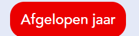

Inleiding
inhoud
inhoud
Voor de typografie heb ik gekeken naar de styleguide, OBA.nl onze eigen projecten en de projecten die vorig jaar voor de OBA zijn gemaakt.
OBA gebruikt voor digitale projecten de font-family 'Avenir'. Er wordt onderscheid gemaakt tussen 'AvenirMedium', 'AvenirBlack' en 'AvenirRoman'.
Er worden vier basis kleuren gebruikt
Voor de OBA corporate logo wordt de hoofdkleur rood aangehouden. De overige gebruikte kleuren voor de OBA logo zijn zwart en wit.


...
Producten zoals boeken, CD's en DVD's hebben standaard een schaduw


Structuur brengen door zoveel mogelijk dezelfde vorm van content images te gebruiken...

Zoveel mogelijk dezelfde structuur aanhouden.. bijvoorbeeld de captions altijd boven of altijd beneden.
Inhoud
Text input maakt het mogelijk voor de gebruiker om gegevens invoeren. Dit kan gaan om bijvoorbeeld een enkele regel tekst, selecties aan de hand van checkboxes en keuzerondjes of opdrachten tot het verzenden van de ingevoerde informatie.
OBA gebruikt nu weinig tot geen styling voor forms. In deze living styleguide staat een nieuw voorstel voor de vormgeving van forms.
Er zijn twee verschillende zoekbalken weergegeven:
Bij zoekbalken staat het zoek-icoontje altijd links in de balk en heeft het altijd een placeholder met bijvoorbeeld "Zoek..." om duidelijk te maken dat het om een zoekbalk gaat. Bij deze zoekbalk zit de input en het icoon Ãn het form element. De input is 100% zo hoog en breed als het form element.
Gebruik


Voor andere textinputs geldt ongeveer dezelfde weergave.
Hier geldt ongeveer dezelfde weergave. De input is altijd wit (omdat wij werken op een grijze achtergrond) en het label staat links. Ook hier staat een placeholder indien nodig. In plaats van dat hier het icoon in het form element zit, heeft het nu een label en krijgt de input een padding in plaats van hoogte en breedte-waarden.
inhoud
De oba heeft vaak een witte button met een zwarte tekst erin of andersom
Ook hebben ze vaak een link erin dat je naar een andere pagina gaat

<<button aria-pressed="false" class="" onclick="boeken()" tabindex="0"
type="button"> boeken overzicht
>
<
de css code
.button, .reset-button, .filterbutton {
border: none;
box-shadow: 10px 5px 5px var(--toggle-color);
background-color: var(--background-color-buttons-white);
/*color: #202121;*/
/*background-color: #DDFF00;*/
font-size: 1em;
font-family: AvenirMedium;
border-radius: 6px;
padding: 0.5rem;
margin-left: 0.2em;
margin-top: var(--margin-1em);
/*color: white;*/
}
>
code html :link naar code
code css :link naar code
Ook wordt er gebruik gemaak van een pictogram aan het einde
Ze willen geen rood of oranje omdat de gebruiker dan kan denken dat er een probleem is
De oba heeft geen tabel erin zitten en deze tabel zou volgens de kleuren van de oba zijn
<table aria-label="dit is de tabel met het overzichtboetepagina">
< tr>
< th id="naam" scope="col">naam boek >
< th id="datum" scope="col">datum in te leveren >
</tr>
< tr>
< td headers="naam">ajax jaarboek >
< td headers="datum">28-12-2023 >
< /tr>
< tr>
< td>devils wears prada >
<td>15-10-2023 >
< /tr>
< tr>
< td>psv jaarboek >
<td>15-12-2023 >
</tr>
<tr>
<d>gijp >
< td>10-11-2023 >
</tr>
<tr>
< td>nirwana >
< td>14-2-2023 >
< /tr>
< tr>
< td>afkowobo >
<td>19-10-2023 >
</tr>
</table>
code html :link naar code
code css :link naar code